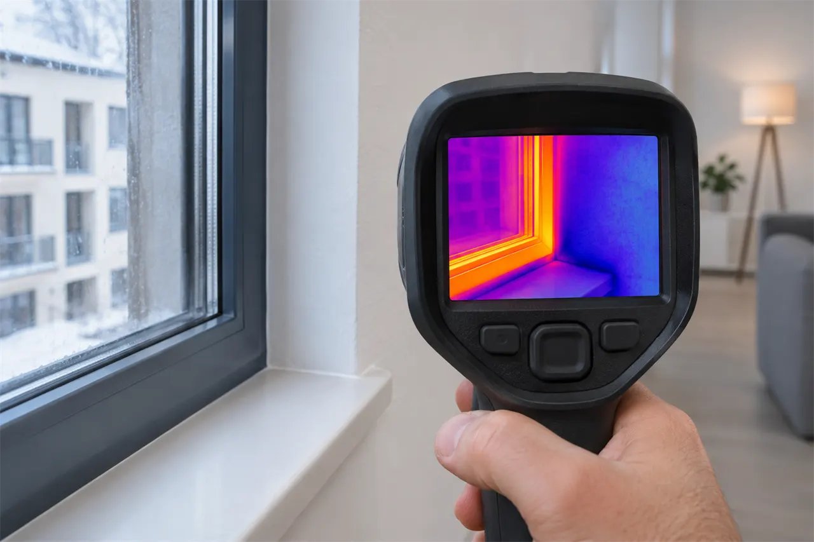
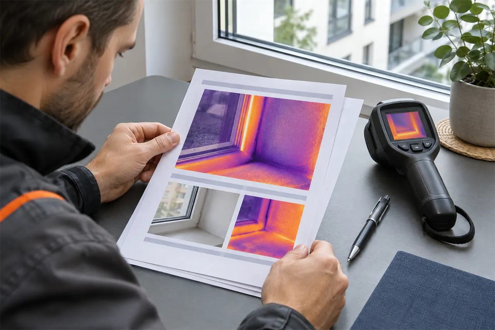

Оконные блоки и примыкания
Перепады температуры у рамы и монтажного шва, возможные участки продувания.
Тепловизор помогает увидеть температурные перепады на стенах, окнах, потолках, полах и инженерных узлах — и заметить возможные зоны теплопотерь, промерзания или продувания.

Тепловизор отображает распределение температуры поверхности. Снимок помогает заметить нетипичные перепады и определить, где может потребоваться дополнительная проверка.
Перепады температуры у рамы и монтажного шва, возможные участки продувания.
Зоны возможных теплопотерь, промерзания или недостаточного утепления.
Температурные различия на поверхностях и в местах соединения конструкций.
Необычный рисунок может потребовать дополнительного осмотра и уточнения причины.
Для сравнения температур внутри и снаружи нужен достаточный перепад. Поэтому осмотр проводят в отопительный период и согласуют с учётом погодных условий.
Минимальная разница между температурой в помещении и на улице — 15 °C. При меньшем перепаде термограмма может не показать нужные различия. Перед осмотром не проветривайте и не охлаждайте квартиру.
Если не уверены, подходят ли условия, укажите адрес и предполагаемую дату в заявке — менеджер уточнит возможность осмотра.
Сначала проверяем условия измерения, затем осматриваем согласованные зоны квартиры и фиксируем температурные перепады.
Сверяем адрес, тип квартиры, дату и температурный перепад внутри и снаружи.
Проверяем стены, окна, примыкания и другие согласованные поверхности и узлы.
Сохраняем термограммы и отмечаем зоны, которые отличаются по температурному рисунку.
Если нужен отдельный документ с описанием зон и рекомендациями, можно оформить тепловизионное заключение.
Стоимость зависит от типа квартиры. Цена указана в рублях за тепловизионный осмотр.
| Тип квартиры | Стоимость |
|---|---|
| Студия | 1 500 ₽ |
| 1-комнатная | 2 000 ₽ |
| 2-комнатная | 2 500 ₽ |
| 3-комнатная | 3 000 ₽ |
| 4-комнатная | 3 500 ₽ |
| 5-комнатная | 4 000 ₽ |

Отдельное тепловизионное заключение включает термограммы, описание выявленных зон теплопотерь, промерзаний, продувания или дефектов утепления и рекомендации по дальнейшим действиям.
Тепловизионное заключениеКоротко об условиях, длительности и границах тепловизионного осмотра.
Узнать о приёмке квартирыВ отопительный период, когда разница температур между помещением и улицей составляет не менее 15 °C. Возможность съёмки зависит от фактической погоды и условий в квартире.
По действующим условиям услуги осмотр проводят в отопительный период. Для информативного сравнения нужен перепад температур не менее 15 °C.
Ориентир — 5–15 минут на одно помещение. Продолжительность зависит от условий объекта и согласованного состава осмотра.
Перед съёмкой не проветривайте и не охлаждайте помещение. Так температура внутри не будет искусственно изменена перед измерением.
Да, возможен отдельный выезд только на тепловизионный осмотр. Условия и возможную доплату за удалённость уточняют для конкретного адреса.
Нет. Термограмма показывает распределение температуры, но сама по себе не устанавливает причину. Для выводов о дефекте может потребоваться дополнительное обследование.
Для этого оформляют отдельное тепловизионное заключение с термограммами, описанием выявленных зон и рекомендациями.
Оставьте заявку. Мы уточним адрес и тип квартиры, проверим температурные условия и подскажем порядок осмотра.